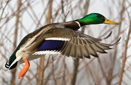
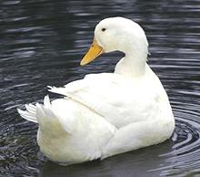
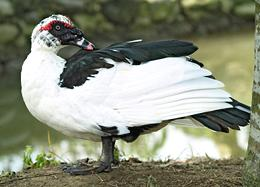
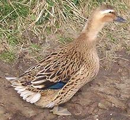
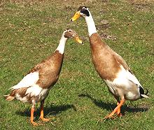
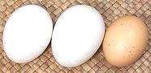
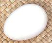

SAFARI
Users
- General and History
- Types, Sizes & Uses
- Duck Eggs - various forms.
- Preparing and Cooking Ducks
- Overview & Comparison to Chicken
- Roasting a Duck
- Yields - meat, skin, fat, bones.
- Duck Parts
General & History
It's hard to generalize about ducks in general - except that some of the many species populate every continent except Antarctica, and get pretty close to there too. For domestic ducks, though, it's easier to generalize - because all except the Muscovy were developed from the wild Mallard, regardless of current size, shape, color or disposition.
Male ducks are often decked out in very fancy colors, but females are, due to their nest tending needs, dressed in dull brown camouflage. Male ducks take no part in hatching eggs or tending the young.
Types, Sizes & Uses
Mallard
 [Wild Duck, Anas platyrhynchos]
Nearly all domestic ducks were derived from the wild Mallard, but
unlike them the Mallard is relatively small (not much over 2-1/2 pounds)
and a strong flyer. The photo shows the typical male coloration. There
has recently been some effort to farm mallards, but the commercial
potential is still unknown and depends on public acceptance. Will people
(mainly chefs) pay more for wilder tasting duck?
Photo © i0036.
White Pekin Duck
-Long Island Duck

[Anas platyrhynchos domestica]
This duck, developed in China, accounts for about 95% of the ducks eaten in North America. They are also known as Long Island Ducks because some were brought there from China in 1873 to establish commercial duck farms. Flavor is mild and flesh is relatively low in fat. They are killed at about 7 weeks when they weigh about 7 pounds. White ducks are preferred for meat (as are white chickens) because they look clean after plucking.
European Pekins are rather different from the North American variety and
walk quite upright, though not as upright as an Indian Runner.
Photo © i0035.
Muscovy Duck
 [Cairina moschata]
Native to Brazil, this is the only domesticated duck that isn't derived from Mallard stock. Muskovys account for about 2% to 3% of the North American market. They are sold mainly into the restaurant trade where their large breasts are appreciated. Their meat is relatively low in fat and has been described as more like veal than like poultry. Muscovy livers are also used to make foie gras.
These are large ducks with the males reaching over 15 pounds
and females can be as heavy as 9 pounds. They are generally killed at 11
weeks when the breasts have reached a mature size. The individual in the
photo has a black face but they more commonly have red faces. Muscovys don't
swim much because they have deficient oil glands, but they can fly, and are
the only domestic duck that roosts on branches at night like a chicken.
Photo © i0034.
Rouen Duck
 [Giant Mallard]
This duck looks very much like a Mallard that's just way too fat to fly
(see Mallard above for male coloration). Show birds grow as large as 12 pounds
but production varieties are considerably smaller. They are highly thought of
as meat ducks in Europe so some are grown in North America, mainly for the
restaurant trade. Its popularity is increasing because its meat is even
less fatty than that of the Pekin, but it is a relatively expensive duck
to grow compared to the Pekin.
Photo © Ben23 distributed under license
Creative Commons
Attribution-ShareAlike 3.0 Unported.
Indian Runner Duck
 Developed in India, this is the premier egg laying duck. A hen will lay around 300 eggs a year, twice what most ducks lay, and has little interest in hatching them. Runners are easily recognizable on land because they stand almost straight upright. They have been described as looking like a bowling pin with feet, but they look much more normal floating.
The photo specimens are the "fawn and white" variety, but there are
white and penciled (whatever that means) varieties. It's main competitor
is the related Khaki Campbell which is an even better egg layer but is
still not common. Thin and tough, runners are not desirable as meat ducks.
Photo by Bjoern Clauss distributed under license
Creative
Commons Attribution-ShareAlike 2.5 Generic.
Duck Eggs

Duck Eggs - Fresh
These are now produced in quantity in California and are in good
supply in the Asian markets. When buying, just make sure you're getting
fresh eggs, not salted - read the label. In California salted eggs are
not dyed red, and Balut look like fresh eggs too.
Details and Cooking.
Duck Eggs - Salted:
These are now produced in quantity in
California and in good supply in the Asian markets. When buying, just make
sure you're getting salted eggs, not raw - read the label. Some Asian
producers dye the salted eggs red or package them in red shrink-wrap -
but California producers don't.
Details and Cooking.
Duck Eggs - Preserved:
The mysterious dark amber jell in some Chinese pastries many Americans have encountered without knowing what it was. Fourty years ago these were shipped over her in great ceramic jars packed in rice straw and ashes, but are today sent over by the container load, cleaned and put up in foam plastic trays. Details and Cooking.

Duck Eggs - Feathered / Balut You'd probably really rather not know,
but these are eggs incubated 16 days to develop the embryo. Much eaten as
an "appetizer" in China, Philippines, Vietnam and Cambodia. They are now
produced in California to meet demand from our Asian communities and can
be ordered on-line. They are available over the counter from some
Chinese / Southeast Asian markets, and in Philippine markets.
Details and Cooking.